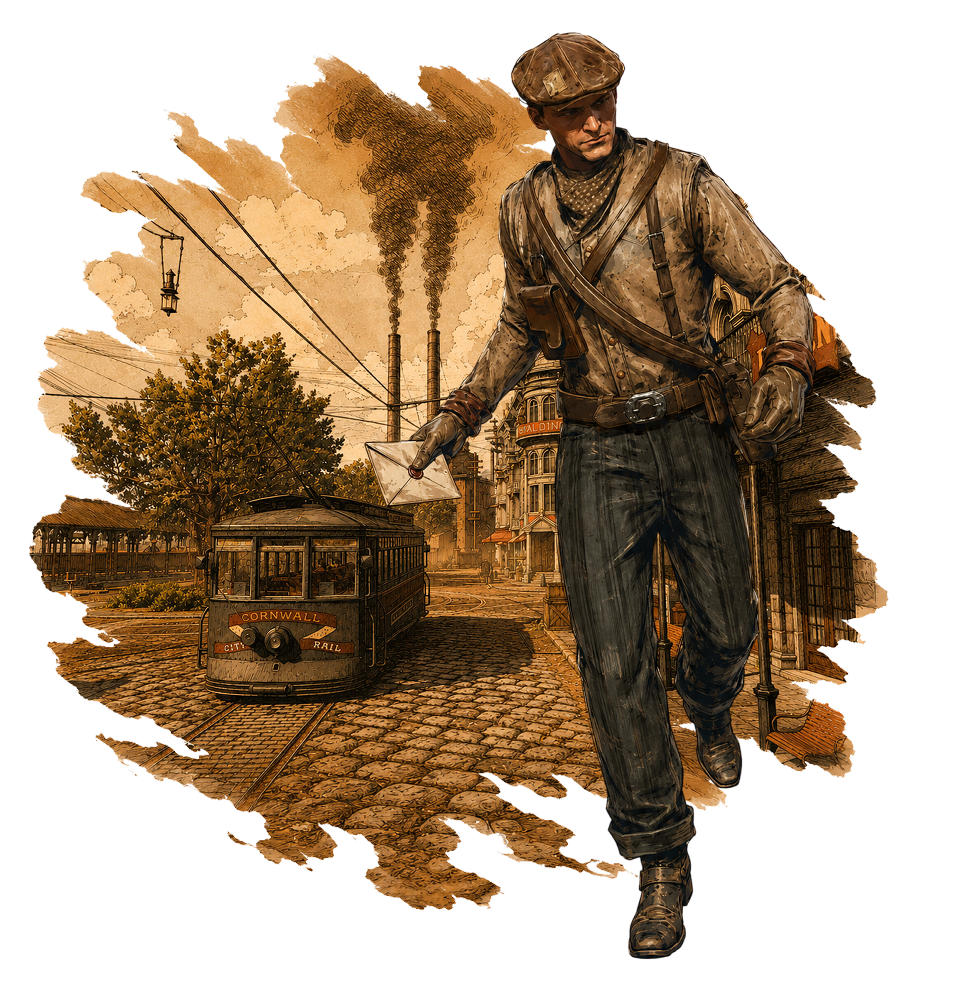
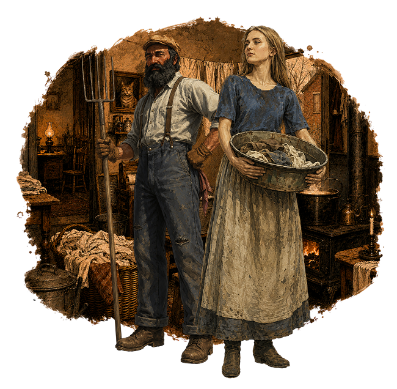
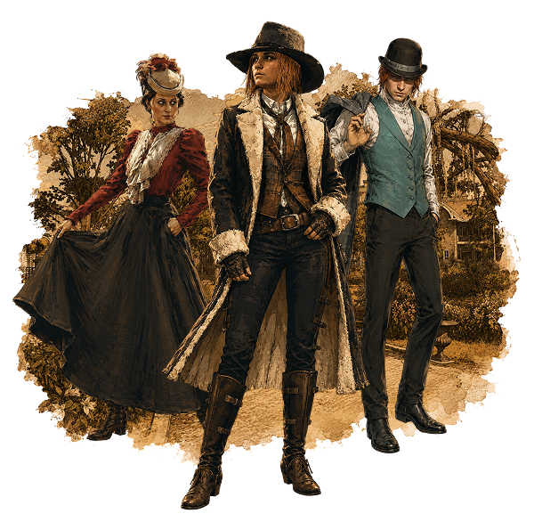
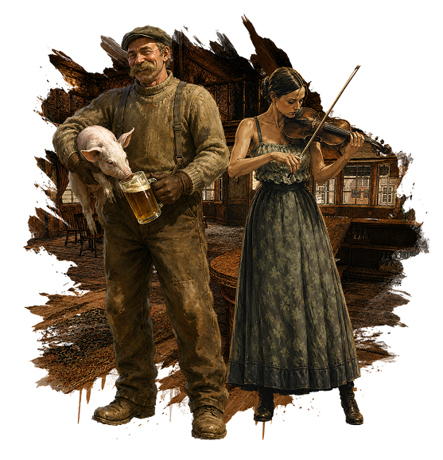
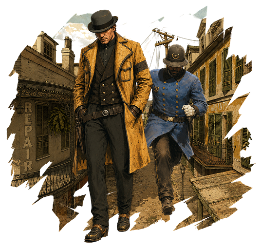
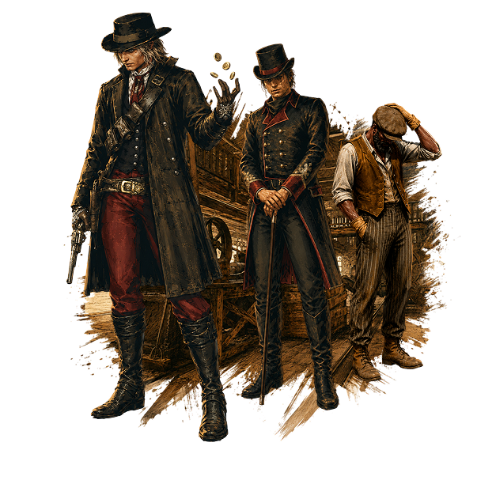
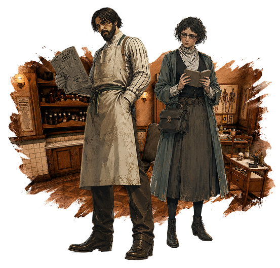
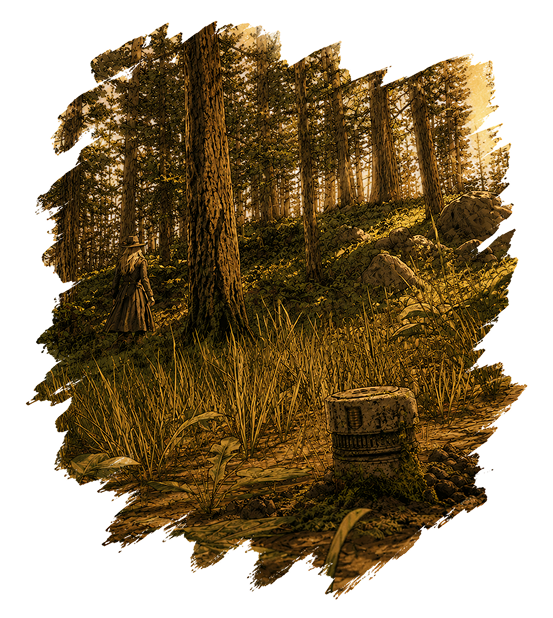

Мир "Прекрасной эпохи"
Человечество стоит на уникальном пороге старого, патриархального уклада XIX века, который еще держит свои позиции, однако в двери уже вовсю стучится бурный и технологичный XX век. В городах ритм задают глухие фабричные гудки, тысячи рабочих в кепках и тяжелых ботинках идут на заводы. Трудовой день длится долго, порой 16 часов на смену, а суббота полноценный рабочий день. На улицах стучат копыта, громыхают повозки, звенят первые электрические трамваи, трещат дилижансы и кареты. В провинциальных городках все живут по своим правилам, а законы соблюдаются просто для приличия.
Во всём этом великолепии люди творят свои истории словами, действиями и судьбоносными решениями. Исходы этих историй могут повергнуть этот мир во мрак, либо вывести его на свет. Никто не знает что будет завтра, ведь человечество не ведает что творит.

Быт людей
Жизнь большинства людей неразрывно связана с солнцем и физическим трудом. Для миллионов крестьян и фермеров по всему миру раннее утро начинается с растопки печи, дойки коров и работы в поле.
Домашний быт требует огромных усилий, особенно от женщин. Никакой бытовой техники в современном понимании не существует, однако в богатых городских домах уже появилось электричество, но большинство людей все еще жгут керосиновые лампы и свечи, а дома обогревают дровами или углём. Водопровод в доме роскошь, для мытья и стирки воду носят ведрами из колодцев или уличных колонок, а затем греют на плите. Большая стирка растягивается на целый день и является тяжелым физическим испытанием. Продукты покупаются каждый день на рынках или у уличных торговцев, ведь домашних холодильников нет, а лёд для ледников привозят в телегах. Зато еда исключительно натуральна, а хлеб пекут люди сами или берут свежим в местной лавке.

Одежда и мода
Выйти на улицу без головного убора в цивилизованном и большом городе считается верхом неприличия. Мужчины носят котелки, кепки или цилиндры, а их костюмы темные, строгие и плотные.
Женская же мода переживает закат викторианской эпохи. Дамы носят длинные платья в пол, закрывающие шею и руки, в противном случае женщина в штанах считается вульгарной, осудительно не вписывающейся в типичные социальные устои, бунтаркой или потенциальной преступницей. Главным их мучением остается корсет, который стягивает талию до неестественных размеров.
На прогулку в крупных городах обязательно нужно брать зонтик не только от дождя, но и от солнца, ведь загар считается признаком крестьянского происхождения, а в моде была аристократическая бледность.

Развлечения
Поскольку радио и телевидения еще не существует, люди развлекают себя сами и ценят каждую минуту отдыха.
Дома по вечерам собираются всей семьей, читают вслух газеты и романы, играют в шахматы или карты. В гостиных, где стоит пианино, обязательно поют под музыку.
В городе огромной популярностью пользуются театры, цирки, танцы и ярмарки. Но главным чудом является кинематограф. Люди выстраиваются в очереди в “иллюзионы”, чтобы посмотреть первые короткие, черно-белые фильмы под аккомпанемент пианиста-тапера или звуки граммофона.
Женщины собираются вместе обсудить сплетни и слухи, а мужчины зачитываются новостями о боксе, велоспорте и первых футбольных матчах. Ну или в крайний раз они попросту пропивают все свои центы в ближайшем салуне или кабаке.

Закон и преступность
Криминальный мир и полиция Сен-Дени и Блэкуотера находятся в отчаянной борьбе на стыке старых традиций и новых технологий.
Улицы Сен-Дени контролируют уличные банды, вооруженные кастетами, дубинками и короткими револьверами. А Блэкуотер терзают повсеместные скандалы, сплетни, коррупция и подковёрные интриги власть имущих, где нередко поутру за городом можно наткнуться на свежую могилу очередного политического деятеля. Самыми частыми преступлениями являются карманные кражи, налеты на лавки, конокрадство и угоны повозок.
Полицейские патрулируют улицы пешком и на лошадях. Если патрульный ловит вора, того ведут в участок буквально за воротник или на крупе коня на глазах у зевак. Носить длинноствольное оружие на виду прямо посреди улицы запрещено местными законами, многие кладут его в сумки на лошадях, либо оборачивают в тряпицы, дабы не вызывать тревогу у граждан.
В это время полиция начинает отказываться от старых методов опознания (когда преступников измеряли линейками) в пользу дактилоскопии - снятия отпечатков пальцев. Теперь недостаточно сменить имя и скрыться в соседнем штате или городе, чтобы почувствовать облегчение от безнаказанности.
Законы суровы, за мелкую кражу можно угодить на каторжные работы: колоть камни или строить дороги в кандалах под палящим солнцем. Судебные процессы проходят быстро, без многолетних апелляций, а смертная казнь (через повешение, расстрел или на недавно изобретенном электрическом стуле) является публичным предостережением для остальных.

Закат Романтики
На американском Диком Западе эпоха классических ковбоев, безумных перестрелок и ограблений поездов уже стремительно катится к закату, но небольшие поселения все еще живут по своим, особым правилам.
Ситуация с законом и технологиями тут выглядит совсем иначе, чем в крупных городах. Красивые ограбления банков уже редкость, на первый план вышли кражи скота, пьяные драки и поножовщина в салунах, мошенничество с продажей земли и споры из-за прав на воду между фермерами.
Власть закона здесь держится буквально на горстке людей: шериф и его помощники, охотники за головами, а также люди таких агентств как “Пинкертоны” и “Либерти”. Местный шериф или маршал - это человек, которого выбрали сами жители. Часто им становится просто самый авторитетный, крепкий или меткий стрелок в округе. Он ходит в обычной гражданской одежде, а о его должности говорит лишь металлическая звезда на жилете. Если происходит серьезное преступление (например, грабили сейф на станции), местный шериф не имеет ресурсов для расследования. Тогда вызывают детективов из частных агентств. Агентство Пинкертона и гильдия “Либерти” мощнее государственной полиции, у них есть огромные архивы с фотографиями и описаниями преступников по всей стране, а также численное преимущество перед любой шайкой.
В деревнях об отпечатках пальцев даже не слышали. Вместо этого провинциальный закон использует проверенные старые методы: плакаты розыска, сарафанное радио и опознание. В далеких поселениях разъяренная толпа местных жителей все еще может устроить самосуд над пойманным насильником или конокрадом до того, как его довезут до окружной тюрьмы. Судьба человека, устроившего самосуд, зависит исключительно от поддержки местных жителей и элит городка. Хоть на бумаге закон США жестко карает за убийство, на практике реальность в маленьких поселениях выглядит куда циничней.
Акулы капитализма
Экономикой правят гигантские промышленные империи - это мир безумного, ничем не ограниченного капитализма.
Сверхбогатые магнаты, корпорации владеют целыми отраслями целиком, а обычный человек покупает керосин для лампы у одной-единственной компании и путешествует по железной дороге, принадлежащей одному человеку. Понятие “антимонопольный закон” только начинает зарождаться, а это значит, что в игру может вступить каждый, у кого хватит силы воли, власти и средств хотя бы на первый месяц выживания его бизнеса, а может и его самого.
Для простого человека корпорация является суровым хозяином. Рабочие на шахтах, сталелитейных заводах и ткацких фабриках не имеют никаких прав. Нет ни оплачиваемых отпусков, ни больничных, ни компенсаций за травмы на производстве. Забастовки жестоко подавляются, иногда с привлечением частной вооруженной охраны.
Но именно сейчас ситуация начала меняться. У всех на устах одна идея: рабочему нужно платить столько, чтобы он сам мог купить то, что производит. Мир бизнеса медленно поворачивается от грубой силы к массовому производству для каждого.

Медицина
Медицина стремительно превращается в точную науку. В больницах крупных городов уже начинают использовать рентгеновские аппараты, врачи впервые смогли увидеть сломанную кость или пулю внутри тела без разрезов. Операционные залы начали освещать электричеством, хирурги стали носить белые халаты и мыть руки перед операциями. Появились первые резиновые перчатки, смертность от заражения крови после хирургического вмешательства поползла вниз.
Здесь же в городских аптеках можно купить первые стандартизированные лекарства, однако контроля за наркотическими веществами почти нет. В порядке вещей купить в аптеке детский сироп от кашля с содержанием героина или успокоительные капли для зубов на основе кокаина. И да, бензин в бутыльках как лучшее средство для выведения пятен, уничтожения вшей, клопов и других паразитов, также продаётся в аптеках. Возводятся новые клиники для душевнобольных, одной из известных считается “Инсмут”. Однако важно знать, что лоботомии еще не существует. В бедных кварталах свирепствуют туберкулез, брюшной тиф и холера, так как люди живут в тесноте и антисанитарии.
В провинции Запада медицина отстаёт от городской на десятилетия. Если в городах сотни врачей разного профиля, то на глухой ферме или в небольшом поселке на сотни миль вокруг приходится всего пара докторов. Деревенский врач является универсалом, он одновременно принимает роды, рвет зубы, вправляет кости после падения с лошади и лечит пневмонию. Чаще всего у него нет даже своего кабинета, он сам едет к больному на лошади или в повозке через шторм и грязь, везя с собой кожаный саквояж с инструментами. Если пациенту требуется срочная операция, её проводят прямо в доме, а в качестве наркоза используется хлороформ, который капали на тряпку перед носом пациента.
Из-за нехватки врачей в поселениях процветают мошенники, например, торговцы с “чудодейственными тониками”. Эти настойки из спирта, опиума и трав не лечат болезнь, но временно притупляют боль, из-за чего пользуются бешеной популярностью.

Всё не то, чем кажется
Мир кажется огромным, а новости доходят неделями. И все же люди остро чувствуют, что жизнь меняется. Однако эти перемены исходят порой из очень неожиданных, странных и таинственных источников.
Этот мир находится на перепутье своего естественного хода развития. И кто знает, как всё обернется через пару лет, ведь где-то в глубине этих земель затаились секреты, раскрыв которые мы рискуем изменить не только нашу жизнь, но и судьбу всего мира.
